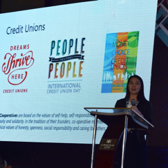
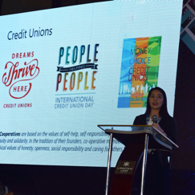

/gyl.bɑ.hɑɾ/
or you can call me G for short; Rose for translation


 



who am i?
I am a consummate daydreamer, lover of hyperbole, and story-teller.
As a kid, I loved telling stories. The ability to make someone laugh or even cry over a story you just told was addictive. My parents saw a future politician. I wasn’t sure what I saw, I just loved sharing stories - mine, Amber Brown’s, Aesop’s, and everyone else’s.
I also loved figuring things out. Whether it’s people or computers. As an elementary and middle school-aged kid, I used to spend hours taking apart my computer and then putting it back together. Unfortunately, I never saw computer science as something I would do. That’s what the smart, quieter people were doing. I was a bit obnoxious defending classmates from teachers - I looked more like a lawyer.
However, my absolute favorite thing to do is make things pretty. I would redecorate my bedroom every two years and never had a cubicle or office that wasn’t decorated. As the daughter of a trained architect (later becoming an entrepreneur who owns custom framing shops in NY) and a FIT graduate (currently the best public school bus driver), I was destined to pay attention to the detail and appreciate beauty and quality.
what have i been up to?
My journey to now: a freelance UX designer living in Milan, includes more than 8 years working in international development, where according to Malcolm Gladwell, I became an expert in development finance and agriculture, and got paid to travel to Myanmar, Kosovo, Haiti, Bangladesh, Guatemala, Kenya, and most recently the Philippines. It also includes an underlying story of self-discovery and an MBA.
From 2010 until July 2018, I was a business development professional, designing and writing grants and contracts for USG-funded programming in developing countries and designing and implementing marketing strategies to raise company visibility. My experience was mainly with small companies - with a maximum of 40 people and a 5-person business development team. I wore a lot of hats and got a lot of opportunities:
- Won millions of dollars for programs in resource-poor areas
- Designed information architecture and design of SharePoint sites for two companies and managed the company transition
- Was a keynote speaker for NATCCO - a national credit union association in the Philippines, discussing the importance of technology in financial inclusion
- Designed and wrote content for websites
However, most rewarding and interesting, has been the user research during program design. I firmly believed and was often shown that solutions lie within the communities that were facing the challenges. I was only needed to kickstart their ideas or speed up activities with fundraising. I also learned that the ideas or programs that took a community-based approach were the most successful and had the most beneficial side-effects like increased savings.
Now, I’m an MBA student at SDA Bocconi, specializing in product development, marketing, and innovation. I’ll be getting the management background and understanding I’m confident I’ll need in the future.
the revolutionary moment
“OW!”
It happened, again. My husband just walked his toe right into the bookshelf. Even if it was his clumsiness, he shouldn’t have to be careful while walking around in his living room - even if it was tiny. There had to be a better way.
While he was at work the next day, with a Hulk-like strength that only appears during interior decorating-spurts, I rearranged our furniture. Then I waited and observed. He would run into something else. So I’d rearrange again, then observe again.
After a few attempts, we finally had a solution - we cut off his toe. Kidding! We found a layout that worked best for both of us and that looked as nice as possible without replacing or removing our furniture.
That end-solution created a level of elation that single-handedly winning a $7 million program to create an affordable housing market in Haiti could not. I wanted to do more than just win a proposal. I wanted to create and work through something until it worked, while also addressing my love of making things pretty.
Then I found UX design in a TedTalk and a documentary. Finally, a name and CAREER to my hobby + skills. I immediately researched programs to learn how to utilize my expertise and learn design tools and chose Bloc’s Designer Track. Thanks to them, I now can claim all of the following skills:
Skills
UX design, UI design, branding & identity, information architecture, wireframing, user research/testing, marketing & communications, strategy, business development
Software
Sketch, Adobe CC (Illustrator, Photoshop, InDesign), Keynote, Microsoft Office Suite (Word, Excel, PowerPoint, Publisher), InVision, Balsamiq, Figma
what else?
If you'd like to talk about my work, learn more, or just chat, send me a note through one of the links below.